10 部片单 · 恐怖 / 科幻 / 惊悚 / 悬疑 / 剧情
| # | 片名 | 类型 | 评分 |
|---|---|---|---|
| 01 | 惊变28年2：白骨圣殿 | 恐怖 / 末世 | 6.5 / 7.3 / 92% |
| 02 | 请求救援 | 惊悚 / 生存 | 6.9 / 7.2 / 93% |
| 03 | 重返重生 | 科幻 / 复仇 | 97% / 62% / 独立科幻 |
| 04 | 团战之夜 | 科幻 / 黑色喜剧 | 7.1 / 81% / 66 |
| 05 | 后室 | 科幻 / 恐怖 | 6.8 / 6.8 / 话题之作 |
| 06 | 密探 | 剧情 / 政治惊悚 | 7.8 / 99% / 最佳外语片 |
| 07 | 无可奈何 | 剧情 / 黑色喜剧 | 7.3 / 7.6 / 90% |
| 08 | 拯救地球 | 科幻 / 惊悚 | 7.0 / 7.7 / 88% |
| 09 | 凶器 | 悬疑 / 恐怖 | 7.0 / 7.7 / 94% |
| 10 | 恐怖游轮 | 悬疑 / 心理循环 | 8.5 / 6.9 / 78% |
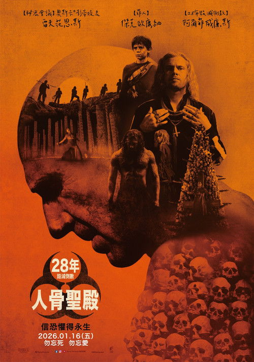
惊变28年2：白骨圣殿 28 Years Later: The Bone Temple
丧尸片走到第 28 年，最可怕的已经不是感染者了。
剧情梗概
rage 病毒席卷后的第 28 年，少年斯派克离开孤岛踏上大陆，撞上“吉米帮”——一群把撒旦崇拜当制服穿的暴力少年；另一边，凯尔森医生正试着“治疗”一名感染者，想证明他们身体里还留着人的部分。两条线在一座用骨头搭起来的圣殿前汇合。
亮点
- 把丧尸片从「人 vs 怪物」拧成「人 vs 人」：真正的恐怖是秩序塌掉之后长出来的新宗教。
- 拉尔夫·费因斯的骨殿段落 + 结尾那支铁娘子（Iron Maiden）配乐，荒诞、悲壮，又莫名温柔。
- 妮娅·达科斯塔的镜头比前作更冷，血浆和哀悼是同一件事的两面。
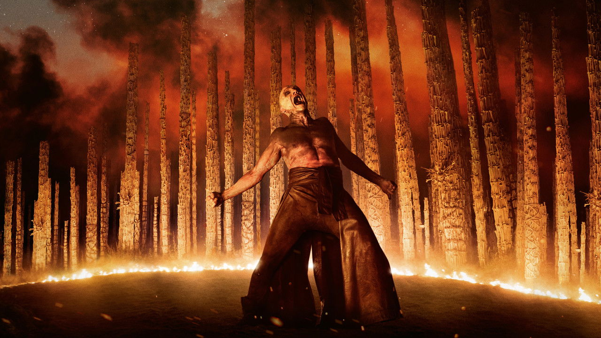
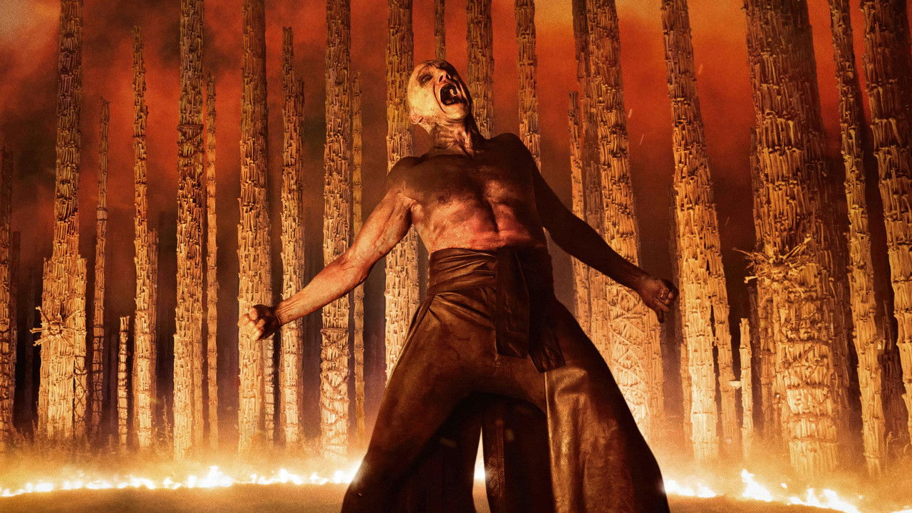
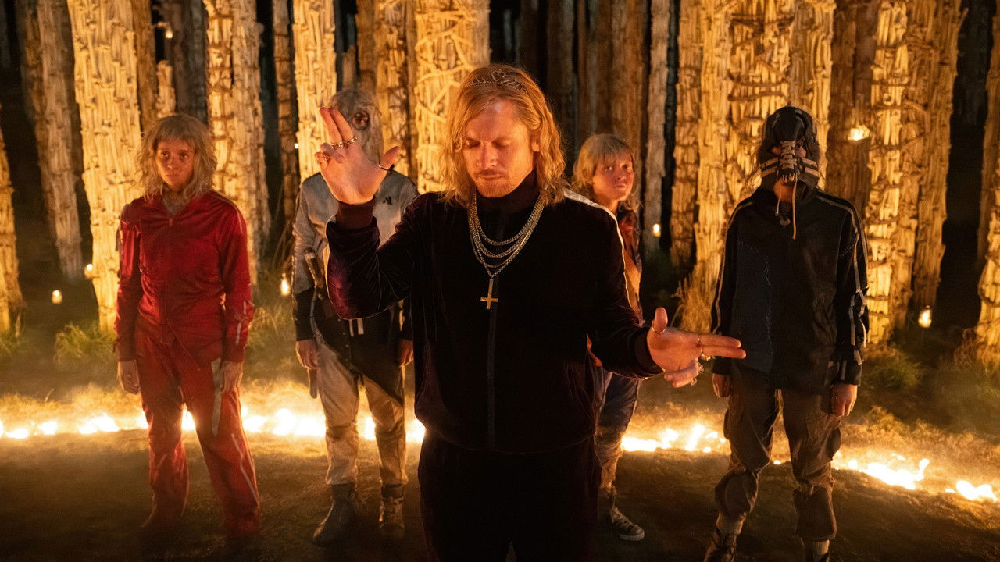
导演与主创 · 他们的历史作品


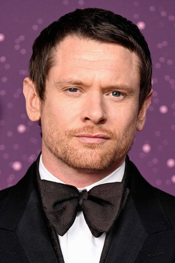


短评（轻微剧透）
它最狠的地方，是让「治愈」变成最残忍的事。参孙被治好的那一刻，他重新想起自己是谁，也重新想起自己失去了什么——所谓白骨圣殿，不是邪教造的，是幸存者用遗忘搭起来的避难所。结尾那段歌舞几乎是全片唯一的温柔，而你心里清楚，它撑不过下一分钟。
为什么值得一看
适合已经看腻了丧尸题材、想看看这个类型还能往哪儿走的人。海外口碑远高于国内评分，属于典型的「评价分化但值得一试」。
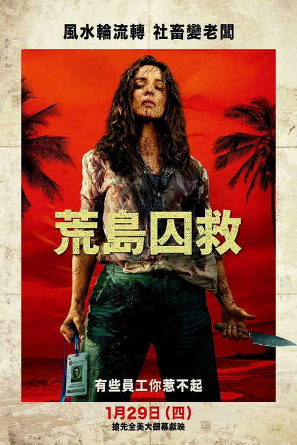
请求救援 Send Help
荒岛只是把办公室搬到了没有监控的地方。
剧情梗概
飞机失事，公司里的一对上下级成为荒岛仅有的两名幸存者。一个精通生存技能却长期被忽视，一个惯于发号施令却什么都不会。求生刚开始是合作，很快就变了味——当求生变成猎杀，谁会是最后的幸存者？
亮点
- 两个人的荒岛，靠表演和调度撑满 113 分钟，山姆·雷米把职场霸凌拍成了生存游戏。
- 瑞秋·麦克亚当斯近年最好的一次表演，温柔和狠劲的切换让人坐立不安。
- 黑色幽默极准，笑点往往就长在痛点上。
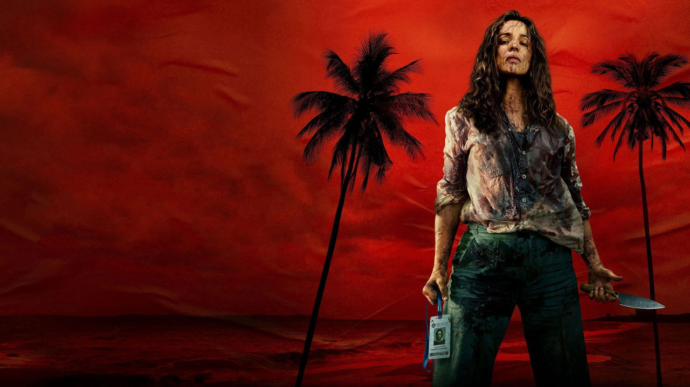
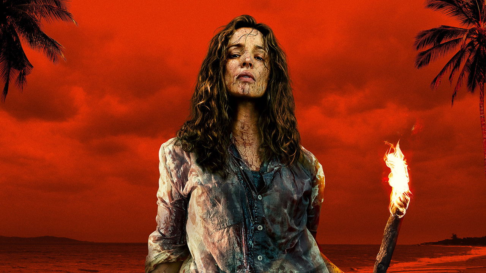
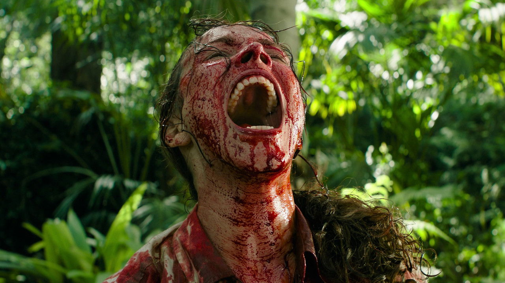
导演与主创 · 他们的历史作品
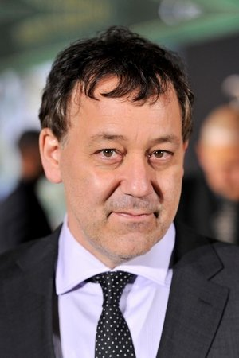


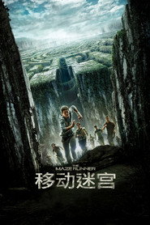


短评（轻微剧透）
最后二十分钟，猎物和猎人换了两次位置，而每一次反转你都会发现自己刚才站错了队。雷米的恶趣味在于：他不肯给你一个可以安心谴责的坏人，他给你一个「换我我大概也会这么做」的人。看完那点不舒服，会跟着你一段时间。
为什么值得一看
喜欢《蝇王》《异形》式人性实验的观众；也想看看雷米离开大制作、回到 B 级片手感后是什么样子。
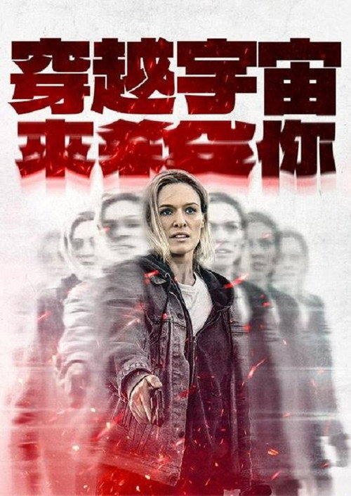
重返重生 Redux Redux
多重宇宙还能有新意吗？这部就是答案。
剧情梗概
女儿被杀害后，艾琳搞到一台能穿梭平行宇宙的机器。她开始一个宇宙接一个宇宙地追杀凶手，杀了一次又一次——直到复仇本身成了她活下去的唯一理由。某一次，她救下了一个本该成为下一个受害者的少女米娅。
亮点
- 把「多重宇宙」从视觉奇观拉回到一个人的丧女之痛，所有科幻设定都为情绪服务。
- 米凯拉·麦克马纳斯几乎独挑大梁，把一个被 grief 掏空的人演得极有说服力。
- 中段米娅加入后，片子从复仇片翻面成「两个受伤的人互相认领」，这是全片最好的转折。
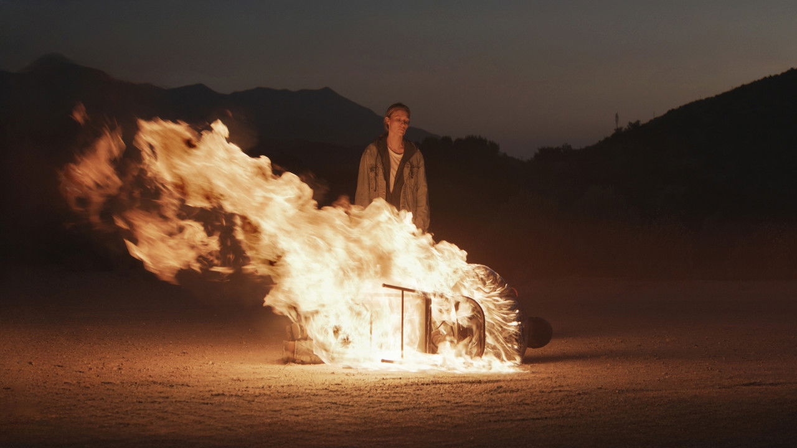
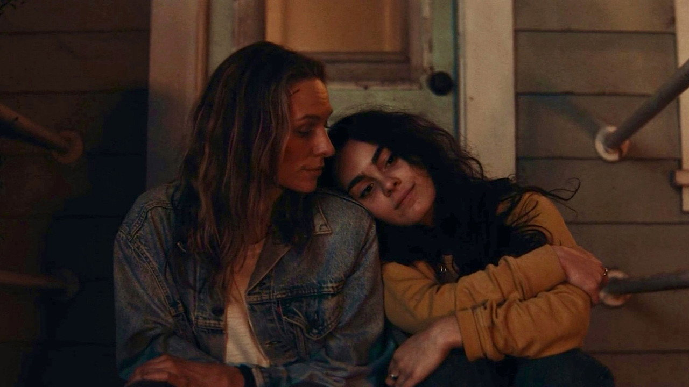
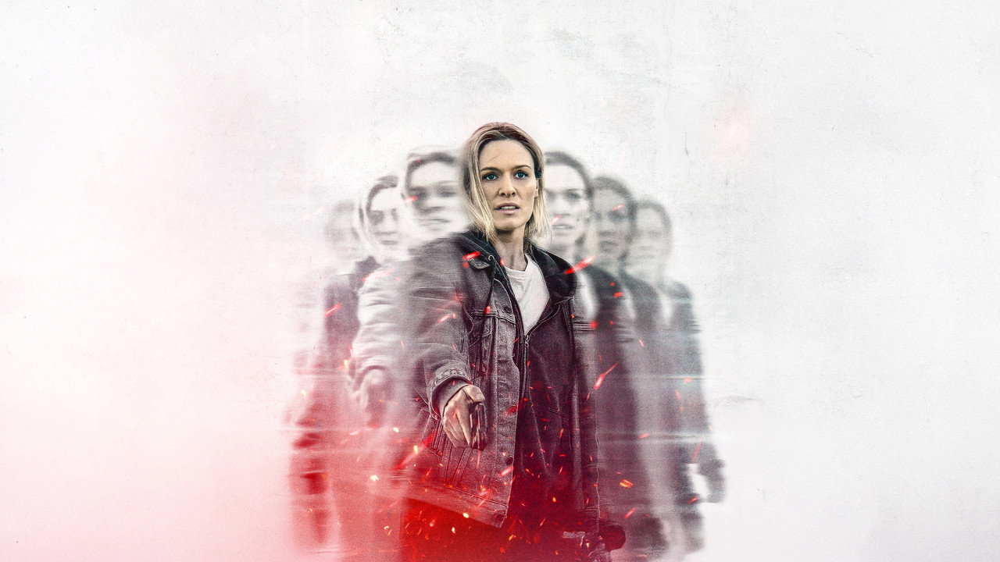
导演与主创 · 他们的历史作品
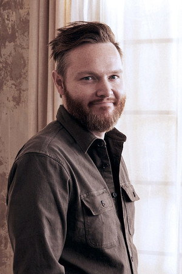
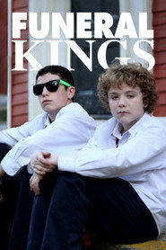
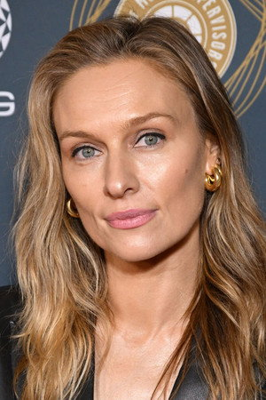
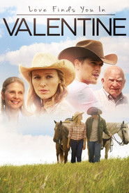
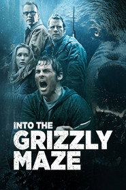
短评（轻微剧透）
杀到第 N 个凶手时你会发现，重复不是为了让复仇更爽，而是为了让它更空。真正致命的一刀是全片最安静的那场戏：她闯进一个女儿还活着的宇宙，隔着窗看了一眼，然后道别。低成本看得出粗糙，但那股情绪是真的。
为什么值得一看
对多重宇宙题材已经疲惫、但还愿意再给一次机会的人。今年被低估得最厉害的独立科幻片。
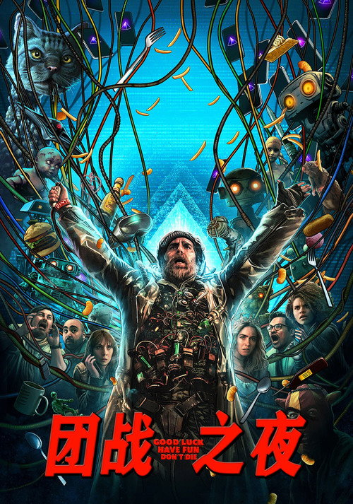
团战之夜 Good Luck, Have Fun, Don't Die
一个穿塑料雨衣的疯子，第 117 次回来救世界。
剧情梗概
深夜十点十分，一个自称来自未来的男人冲进洛杉矶一家通宵餐厅，宣布要招募几个人跟他去拯救世界——这已经是他第 117 次尝试，前 116 次全失败了。他要阻止的，是一个九岁男孩即将创造出来的、会把人类养废的 AI。一夜、六条街、六个任务。
亮点
- 一间餐厅、一夜时间，把「时间循环 + AI 末日」塞进密闭空间，节奏像游戏读档。
- 山姆·洛克威尔的表演是「疯癫里带着累」，越到后面越像在求救而不是下令。
- 每个人的前史都是一则当代寓言：克隆死去的孩子、为 VR 失去伴侣、被手机吃掉的学生。
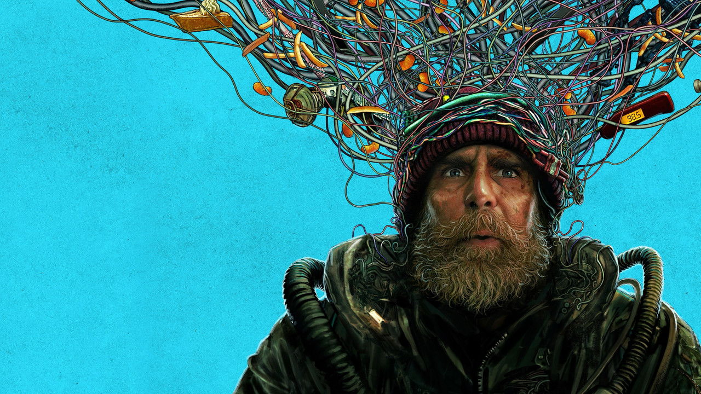
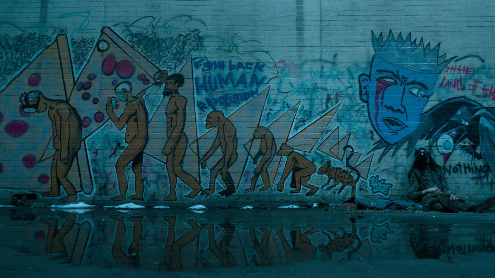
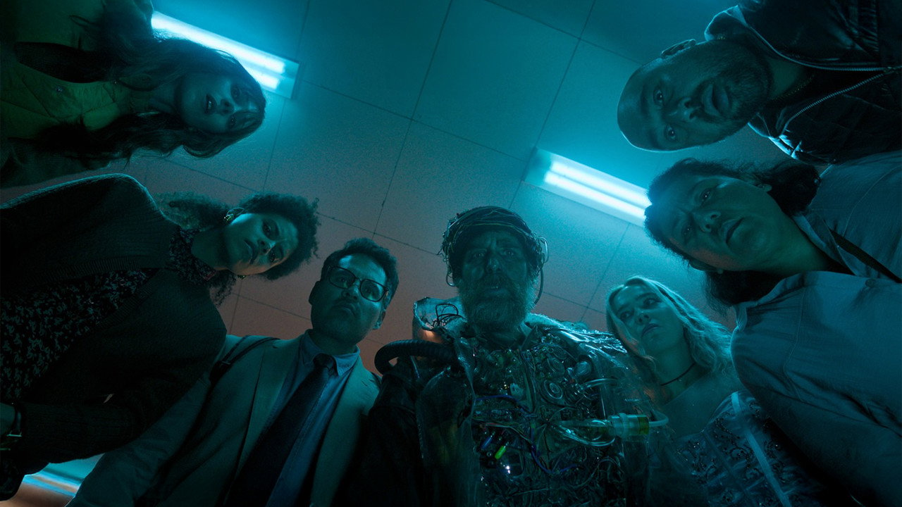
导演与主创 · 他们的历史作品


短评（轻微剧透）
维宾斯基骂得很脏，也很真诚——他把「刷短视频刷到世界末日」拍成了恐怖片。中段确实乱，规则交代得有点绕，但那股愤怒是真的：AI 不是敌人，是我们主动交出去的注意力。那句台词刺得很准——「AI 会给你想要的一切，但最后全都是假的。」
为什么值得一看
喜欢《瞬息全宇宙》《前目的地》那种高概念乱炖的人；对 AI 议题有情绪、想看有人替你骂出来的观众。
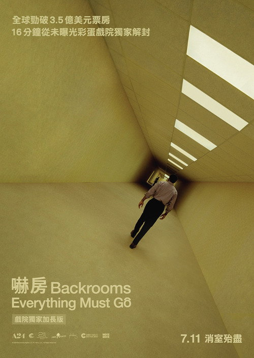
后室 The Backrooms
今年讨论度最高的恐怖片，终于把「后室」拍出了实体。
剧情梗概
心理治疗师玛丽的病人，在一次诡异事故后「切入」了一个不该存在的维度：无限延伸的黄色办公空间，头顶荧光灯嗡嗡作响，现实规则全部失效。为了把他带回来，她只能自己走进去。
亮点
- 把网络共创恐怖美学第一次搬上大银幕，黄色走廊的质感终于有了实体。
- 切瓦特·埃加福 + 雷娜特·赖因斯夫，给了一个 B 级概念 A 级表演。
- 空间即心理创伤：每一层后室都对应一段走不出来的旧事，「逃出去」因此有了情感重量。
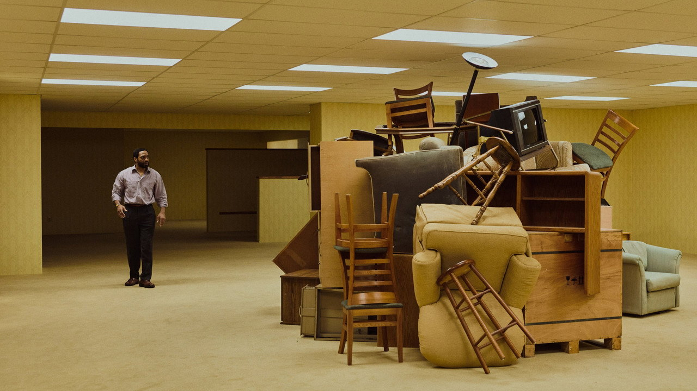
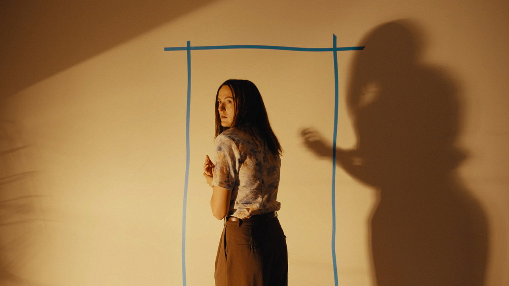
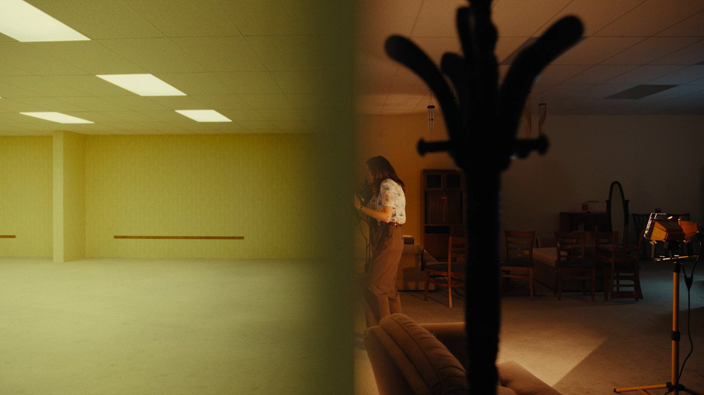
导演与主创 · 他们的历史作品


短评（轻微剧透）
争议几乎全在「具象化」三个字上——粉丝心里的后室一旦有了确定形状，必然得罪一半人。但作为一部影院片，它找到了聪明的落点：那些无尽走廊不是地狱，是每个人反复走不出去的那件事。豆瓣 6.8 但「好于 90% 恐怖片」，这话本身就说明它的位置。
为什么值得一看
对「阈限空间 / liminal space」美学有感觉的人；想亲眼看看今年最出圈的恐怖概念到底被拍成了什么样。
密探 O Agente Secreto / The Secret Agent
今年最完整的一部电影：独裁被拍成了炎热的、彩色的日常。
剧情梗概
1977 年狂欢节期间的巴西累西腓。化名「马塞洛」的前技术专家逃回家乡，想接回自幼分开的儿子。整座城市在过节，也在清算——而死亡威胁一直跟在他身后。
亮点
- 把政治惊悚拍成「生活的惊悚」：最可怕的暴力发生在阳光、音乐和人群里。
- 瓦格纳·马拉收敛到极致的表演，戛纳影帝实至名归；乌多·基尔的最后一部电影。
- 门多萨对城市的爱：电影院、唱片、街道，都是他要保住的记忆。
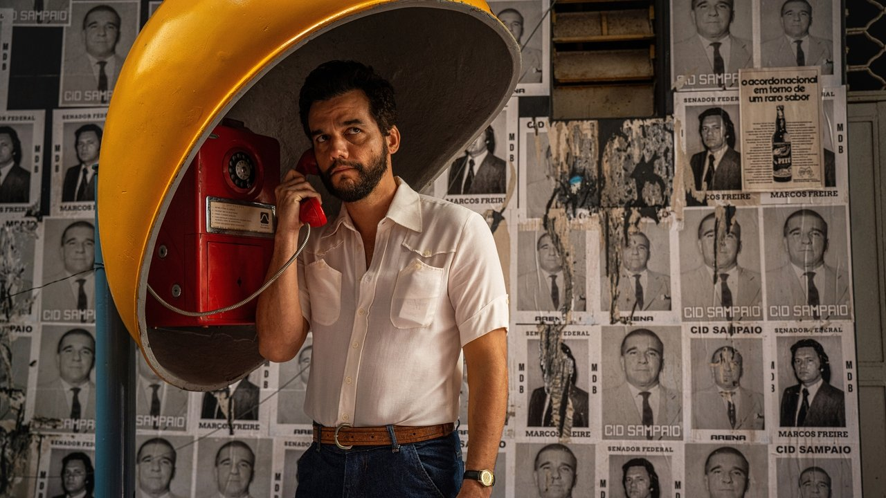
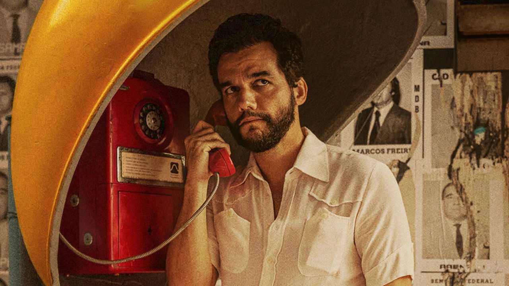
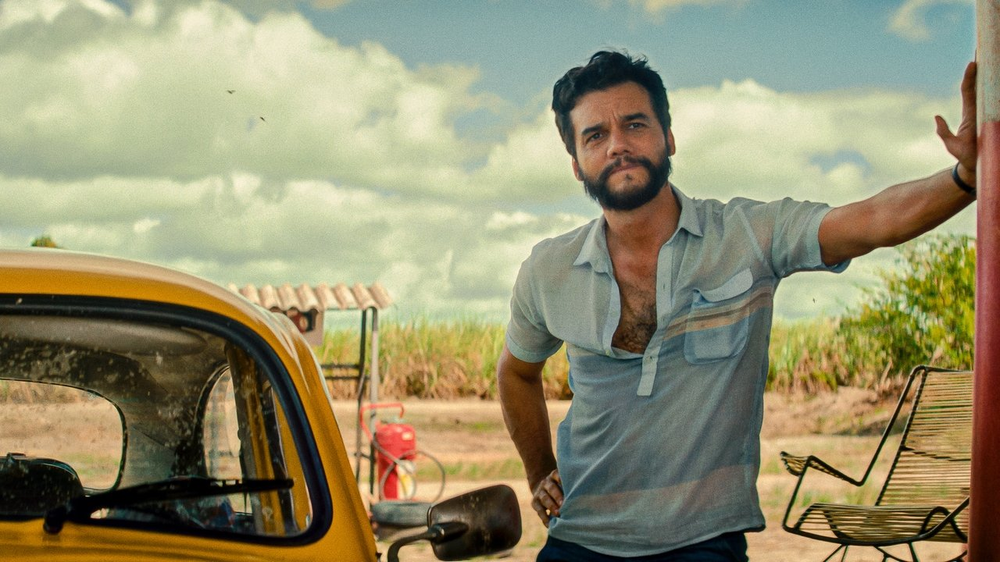
导演与主创 · 他们的历史作品
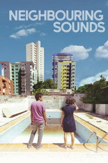
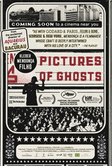


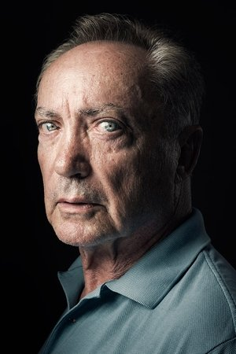


短评（轻微剧透）
它最厉害的地方，是不把独裁拍成黑白色，而是拍成彩色、炎热、吵闹的日常——暴力就长在日常里。中段那条「鲨鱼肚子里的人腿」支线荒诞得像热带八卦，却正是那个年代的真实气味。结尾跨越数十年的一笔会让你明白，前面所有的耐心都是为了这一脚：历史不会自己保存记忆，得有人去翻档案。
为什么值得一看
今年颁奖季的绝对主力（金球奖最佳外语片 + 奥斯卡四项提名）。想看一部结构、表演、作者性都在线的「大人看的电影」。
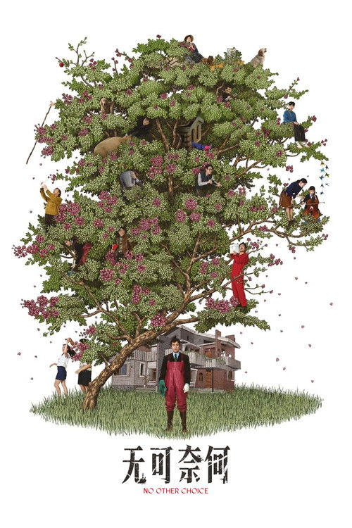
无可奈何 No Other Choice (어쩔수가없다)
为了保住房子，他决定把竞争对手一个个除掉。
剧情梗概
在造纸厂干了 25 年、真心觉得自己「已经拥有一切」的老技师柳万秀，某天突然被裁员。为了保住妻子孩子、守住那套千辛万苦买下的房子，他开始重新求职；然后他想出了一个办法——把竞争对手一个个杀掉。
亮点
- 朴赞郁把「中产坠落」拍成荒诞剧：每一步都很好笑，每一步都在往下掉。
- 李炳宪把一个小人物的体面崩塌演得毫厘不差；孙艺珍的妻子绝不是背景板。
- 视听依旧顶级：对称构图、突兀的幽默、残忍的剪辑节奏，一件都没少。
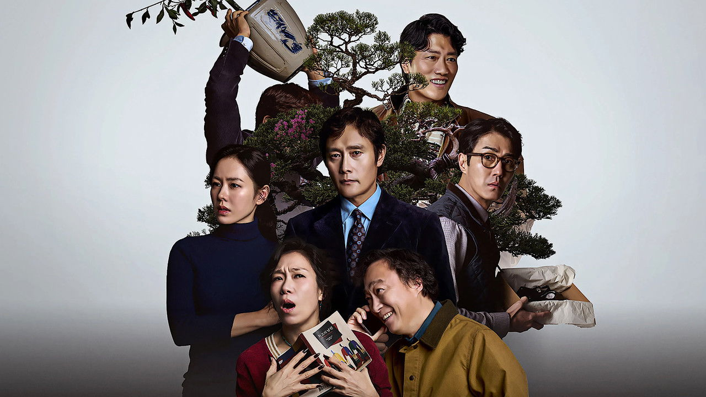
导演与主创 · 他们的历史作品


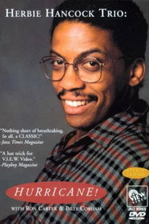


短评（轻微剧透）
最冷的一笔是：他不是恶人，他只是「没有别的选择」——片名既是借口，也是判决书。当整个系统把人变成耗材，杀人就成了一种求职技巧。看完你会笑不出来，因为那份焦虑一点也不异国，它就贴在我们自己的工位上。
为什么值得一看
朴赞郁粉丝必看；对职场与中年危机有切身体感的人（可能会看得有点疼）。多伦多人民选择奖第一名、青龙奖最佳影片。
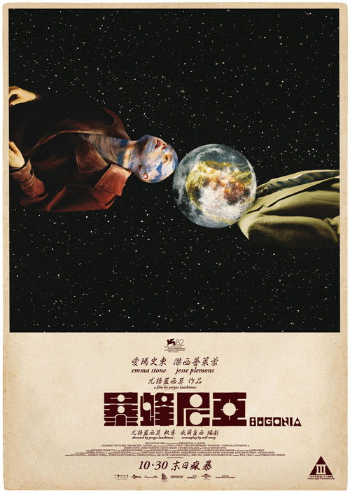
拯救地球 Bugonia
两个疯子绑架了女 CEO，因为她其实是外星人。
剧情梗概
两个深信阴谋论的年轻人——养蜂人泰迪和表弟唐——绑架了一家大型药企的女 CEO 米歇尔，坚信她是来毁灭地球的外星人。他们把她关进地下室、剃光她的头发，用尽荒诞手段想逼她「现出原形」。
亮点
- 兰斯莫斯最锋利的一次：荒诞设定底下是彻骨的当代寓言。
- 艾玛·斯通剃光头出演，被绑在椅子上却始终牢牢掌控着场面。
- 杰西·普莱蒙的偏执狂表演令人不适又心碎——他不夸张，他可信。
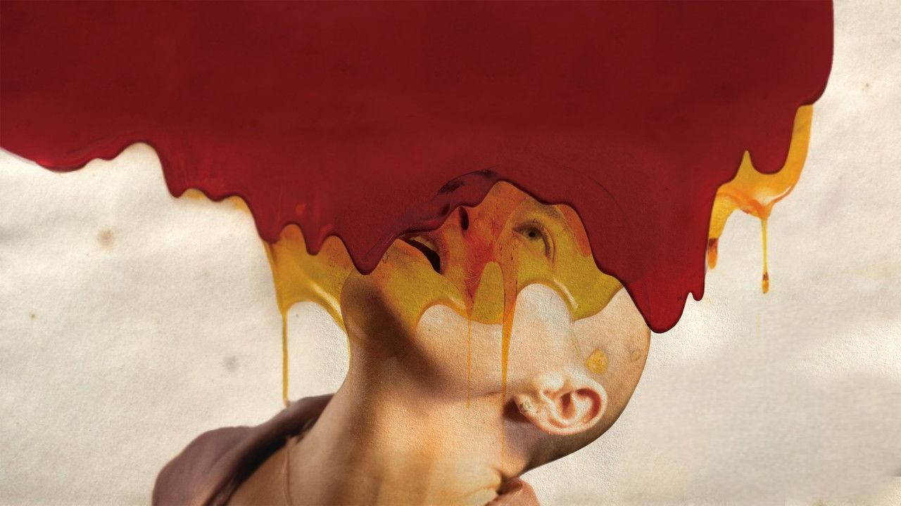
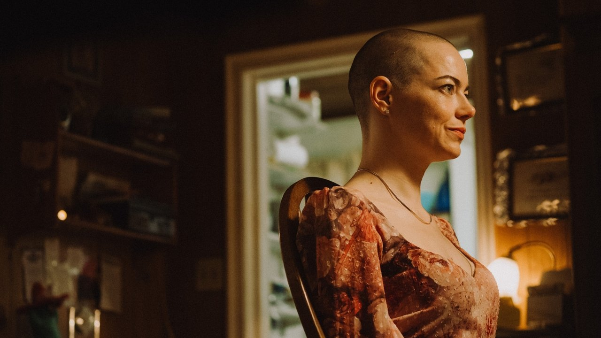
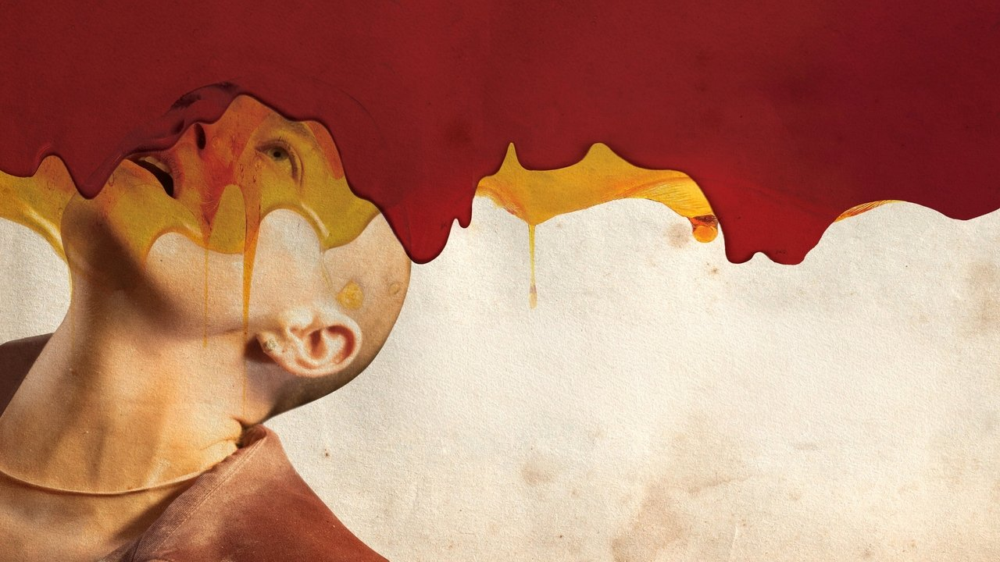
导演与主创 · 他们的历史作品


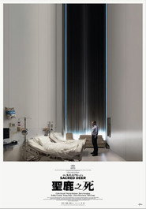


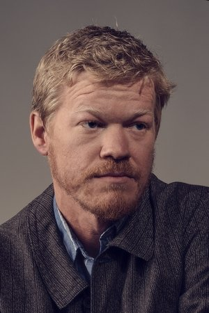


短评（轻微剧透）
地下室里有三个「疯子」，而谁来定义疯子，是全片一直在掰的问题。最后十五分钟千万别被剧透，它会把你以为自己站的那块地整个抽走。看完你会反复想那个问题：真正的外星人，会不会正坐在 CEO 办公室里签文件？
为什么值得一看
兰斯莫斯 / 艾玛·斯通粉丝；喜欢看完还能跟人吵一架的电影。改编自 2003 年韩国cult片《拯救绿色星球!》，可作对照。
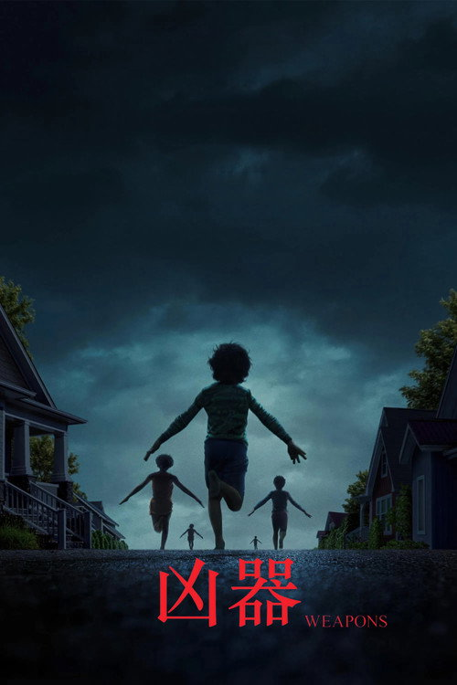
凶器 Weapons
凌晨 2:17，17 个孩子同时跑出家门，再也没有回来。
剧情梗概
同一晚的同一时刻，同一个班级的 17 个孩子以诡异姿势冲出家门集体失踪，全班只有一个男孩留下。老师、家长、警察、小偷、校长、男孩——六个视角轮流展开，真相被一块块拼出来。
亮点
- 多视角拼图叙事：每换一个视角，就把你对前面所有的判断重排一次。
- 几乎不靠 jump scare，靠构图、声音留白和「日常场景被异化」制造压迫。
- 把小镇恐慌拍成社会寓言：找替罪羊，永远比找真相容易。
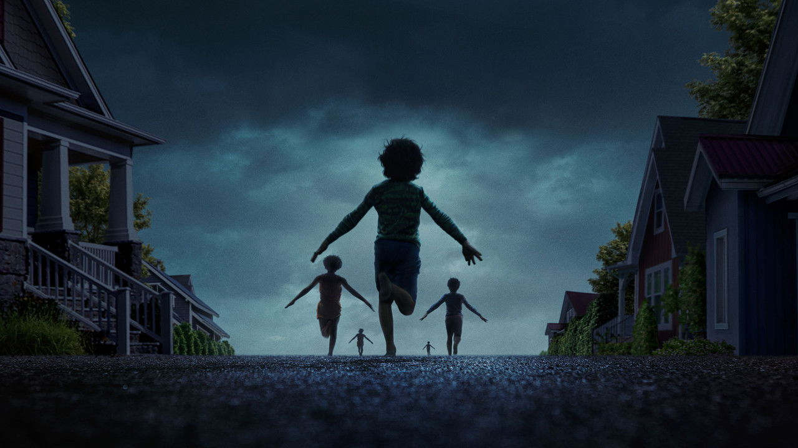
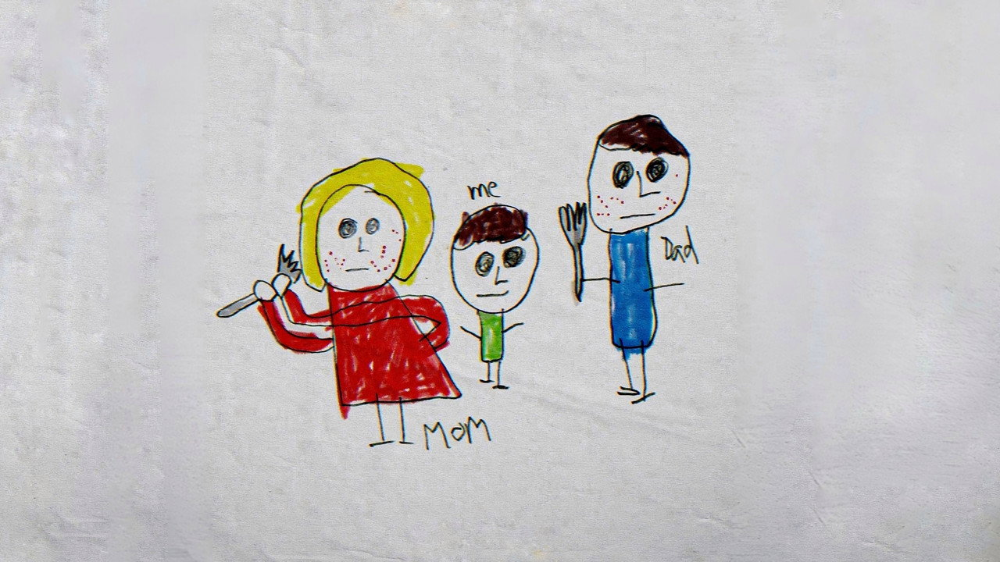
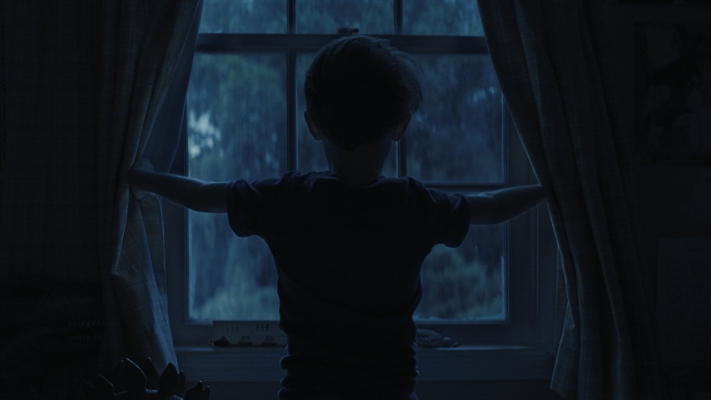
导演与主创 · 他们的历史作品


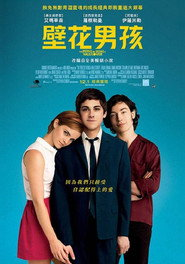

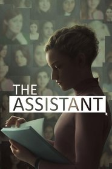


短评（轻微剧透）
真正的「凶器」不是那个女巫，是这座小镇对彼此的猜忌。结局孩子们反扑的那一幕又脏又快，把「正义必胜」的幻觉撕了个干净——被救回来的孩子，没有一个还是完整的。看完你会想走到街上，用一种不太一样的眼神看看自家窗外。
为什么值得一看
喜欢《野蛮人》的人（同一个导演）；想看今年叙事最有想法的恐怖片。3800 万成本换回 2.5 亿美元票房。
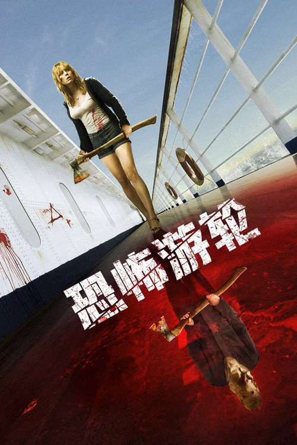
恐怖游轮 Triangle
豆瓣 Top250 的时间循环天花板，17 年后终于登上内地大银幕。
剧情梗概
单亲母亲杰西和朋友们乘游艇出海，风暴掀翻了船。绝望之际，一艘本该在 1930 年就失踪的旧游轮「埃俄罗斯」号缓缓驶来。船上空无一人，只有血迹、涂鸦，和一种她没法解释的似曾相识——她掉进了一个逃不出去的循环。
亮点
- 时间循环片的逻辑天花板：没有一个镜头是废的，每一处伏笔都会回响。
- 恐惧不来自鬼怪，来自「命运无法更改」的窒息感，是细思极恐那一挂。
- 内地首次公映、一刀未剪，影院的声场会把轮回的压迫感放大好几倍。
导演与主创 · 他们的历史作品


短评（轻微剧透）
它讲的从来不是时空陷阱，是一个人不肯原谅自己。每一次「再试一次」，都是执念的一次刷新；越挣扎，循环收得越紧。看到最后你会发现，最恐怖的不是甲板上那堆东西，而是杰西坐进出租车、说「我马上回来」时的那个表情——她明知那条路通向哪里。
为什么值得一看
还没在影院看过的人，这次别再错过了。烧脑片入门与进阶都合适，看完值得去翻一遍时间线图解。